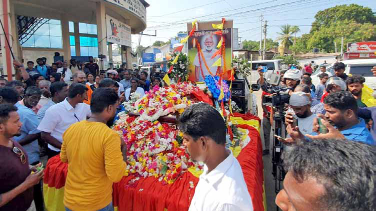
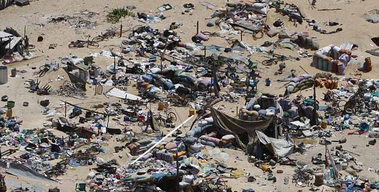
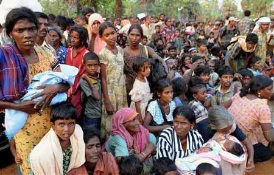
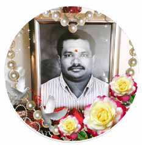

A Symphony of Solace
A Symphony of Solace
Jaffna Monitor hellojaffnamonitor@gmail.com 16 BY: Kenga Shandralingam A Symphony
of Solace N ot only has language ceased to be a barrier to enjoying beautiful music, but I've also realized that a lack of musical knowledge isn't a hindrance either. Although I've never sought refuge in a music class, even during the rain, I now find myself mesmerized by music for extended periods. My hands clap to the rhythm instinctively, without any conscious direction from my brain. At times, I even lose track of hunger. Hymns, once monotonous and grating to me when accompanied by only one or two instruments, now fully captivate me. I feel as though I'm journeying through an uncharted land, bewitched by the performance's beauty. During festival times in Nallur, the sight of people seated simply on the sandy ground, engrossed in expert Carnatic concerts, used to seem like a voyage to a foreign world to me. I now regret having felt that way years ago. This transformation began after I accidentally stumbled upon a performance by Deepika Varadarajan on YouTube's QFR program last year. Although she performed only a few songs, my subsequent searches about her opened a gateway to a vast realm of traditional music. It has now become a routine for me to watch and relish a song or two in the afternoon or before bedtime. What distinguishes her from other musicians is her ability to perform any song, in any language, with unwavering devotion and seemingly effortless elegance. Her music flows softly like a stream, then swells like a mighty river, and finally cascades down like a waterfall from a mountain peak. Throughout her music's dynamic and multidimensional journey, her divine, radiant smile is a constant presence from the beginning to the end of each song. Observing her maintain this continuous smile is a rarity I have not seen in any other artist. As Kalki's music reviews suggest, the essential qualities of a singer are a 'sweet voice, extensive music
Jaffna Monitor hellojaffnamonitor@gmail.com 17 musical knowledge, and expressive capability.' From my modest but expanding understanding of music, Deepika clearly possesses these qualities in abundance. Her artistry seamlessly fuses these elements, creating an absorbing and emotional experience for the audience. Her performances, marked by both technical expertise and deep emotional expression, establish her as an artist of extraordinary caliber. Her divine voice masterfully guides each song, while her captivating presence ensures that the audience's eyes and hearts are firmly fixed, making the journey through her songs a delightful escapade. Typically, one doesn't start listening to Deepika's songs with the intention of stopping after just one; it invariably turns into an extended session. Yet, no matter the length, her music leaves you feeling light and uplifted, as if floating in the air. Despite her notable career in the film industry, her musical contributions there are scant, which leaves her admirers longing for more of her captivating voice, a pillar of Tamil music. For over a decade, during my regular medical check-ups in Bangkok, I have been consistently prescribed migraine medication. The end of the war in Eelam and witnessing the conditions at the 'Manik Farm' camp, where the surviving Vanni people were treated inhumanely, has been deeply distressing. Consequently, severe migraines have become a persistent part of my life. However, six months ago, during a visit to my doctor, I declined the migraine medication, prompting a look of surprise from him. Indeed, ever since I started listening to Deepika's songs daily, those once essential pills have become redundant. Keep singing, the luminous star of music. Note: This article was written by Kenga Shandralingam, a humanitarian officer currently attached to an international organization in Myanmar. He is a writer, motivational speaker, and music enthusiast.
Jaffna Monitor hellojaffnamonitor@gmail.com 18 Beyond Shanthan: Honoring the Many Faces of the LTTE S upporters of the LTTE, who previously claimed that Shanthan, arrested in 1991 and convicted in the Rajiv Gandhi assassination case, had no involvement with the LTTE, have recently written extensively about his involvement with the organization and its operations following his death. They now acknowledge that he was a LTTE member and buried him in the Ellankulam Thuyilum Illam (resting place) or Ellankulam Martyrs' Cemetery of the LTTE. Shanthan's younger brother, Mathisutha, went a step further by detailing the services Shanthan rendered to the LTTE. He outlined Shanthan's involvement, noting that during his high school days at Uduppidy American Mission in 1988, Shanthan planned several attacks against the Indian army. These attacks were carried out with other LTTE members: Salam, David, Gobu, Arjuna, Raghuvaran, and Neelan. It is noted that Raghuvaran, also called 'one-eyed Sivarasan', was the mastermind behind the Padmanabha and Rajiv Gandhi BY: J. Kumar Babu OPINION

Jaffna Monitor hellojaffnamonitor@gmail.com 19 associations, while David was the assassin in the Padmanabha case. This clearly indicates the connection Shanthan has with these two high-profile assassinations. Mathisutha also noted that after finishing his high school exams, Shanthan served as a direct combatant in the war and travelled to India by boat for higher studies in commerce, living near the EPRLF office in Chennai. He wrote that, in relation to the Padmanabha assassination case, the Supreme Court sentenced Santhan to nine years in prison. Upon his return to Sri Lanka, he was appointed responsible for the entire island and operated under the name 'Thinesh.' He also mentioned that Pottu Amman never missed eating at his mother's house whenever he was in Mallavi, indicating a close familial relationship between Shanthan's family and the LTTE. Therefore, his burial in the Ellankulam martyr's resting place is viewed as appropriate by all LTTE supporters. I have no opposing view on Shanthan being commemorated by LTTE supporters. However, my question remains: Do we remember all the LTTE fighters? The answer is no. Anyone with an iota of conscience would acknowledge that we don't remember all the LTTE fighters who took up arms for the liberation of Sri Lankan Tamils. I am haunted by memories of Tamil Nadu youths who, driven by the plight of our own Sri Lankan Tamils, joined the LTTE to fight against the Sinhalese government. This still bleeds my heart and gives me nightmares. During the peak of the Eelam struggle, numerous Tamil youths from Tamil Nadu, fueled by ethnic solidarity, volunteered to fight for Tamil Eelam. The LTTE ferried them here by boat, provided arms training, and integrated them into the organization. I personally knew a few youths from Tamil Nadu who joined the LTTE; I met them in the Vanni jungle. They were genuine warriors, motivated solely by their profound love for the Sri Lankan Tamils. While we, Sri Lankan Tamils, had the duty to fight for our people, these Tamil Nadu youths were driven purely by their deep affection for us. Tragically, Pottu Amman, the intelligence chief of the LTTE, harboured suspicions that some of the passionate youths from Tamil Nadu were infiltrated by RAW (The Research and Analysis Wing, India's foreign intelligence agency). Following directives from Prabhakaran and Pottu Amman, a heartbreaking fate befell the majority of these fighters. Despite the lack of solid evidence of their alleged association with RAW, these young individuals, who had selflessly journeyed to aid our cause, were ruthlessly executed by the LTTE. During my time with the LTTE and its intelligence wing, I witnessed Pottu Amman's inability to produce even a shred of proof against these innocent youths from Tamil Nadu. Even high-ranking LTTE leaders, in confidential conversations with me, condemned this savage act of fratricide orchestrated by Pottu Amman under Prabhakaran's orders. Yet, they remained publicly silent, paralyzed by the fear of repercussions. The memories of these young fighters still torment me, robbing me of sleep. How could a freedom organization eliminate scores of youths merely on the basis of suspicion or paranoia? How can we possibly justify such actions? If we do, we are neither a freedom movement nor even human. Are these Tamil Nadu youths, I estimate around hundreds, remembered? The answer is tragically no.
Jaffna Monitor hellojaffnamonitor@gmail.com 20 Have we ever acknowledged these innocent souls who journeyed all the way from India to fight alongside us? We've even concealed the truth from their families. Just as Shanthan's mother yearned and agonized for her child, the mothers of these Indian youths must have endured similar suffering. Shanthan's mother's love for her son, her longing for his return, and her desire to feed him even a single morsel of rice with her hands is heartbreakingly understandable. But doesn't this tragedy also apply to the mothers of the Indian youths? Do we remember the Muslim fighters of the LTTE, who were killed due to the leadership's paranoia? In the 1980s, a large number of Muslim youths, numbering in the hundreds, joined the LTTE, driven by their thirst for a sovereign Tamil land. However, when relations between Tamils and Muslims deteriorated in the late 1980s and early 1990s, the LTTE leadership mercilessly killed hundreds of its own Muslim guards, suspecting them of being agents of Sri Lankan intelligence. I personally knew a few of these Muslim youths. It still breaks my heart to know that some of them were killed in such cunning ways. They were summoned to a battlefield and then shot dead from behind. I prefer not to elaborate further. Do we remember our covert black tigers (kiwKf fUk;Gypfs;) publicly? Pottu Amman once told me that there were around 300 covert black tigers. These black tigers conducted massive operations. The first attack by the covert black tigers occurred on March 2, 1991, in Colombo on Havelock Road, killing Ranjan Wijeratne, the then ruthless Minister of Defence, involving a car bomb. The LTTE's intelligence wing's Colombo head, Charles, masterminded the attack. The individual who carried out this first concealed Tiger operation was Prem, who initially worked as a driver for Dominic, the then- political head of the Jaffna district. Later, Prem was inducted into the intelligence unit and subsequently into the covert black tigers, a special unit within the intelligence wing. I met Prem a few times and talked with him also. He had a round face and a great, inviting smile. He was a good driver, too. The members of this specialized unit were Aerial View of the Mullivaikkal on May 18, 2009

Jaffna Monitor hellojaffnamonitor@gmail.com 21 not publicly acknowledged. Instead, their commemoration occurred privately, primarily on August 19, the anniversary of Sivarasan's death. These confidential memorials, often led by Pottu Amman, serve as a notable indication of the LTTE's involvement in the assassination of Rajiv Gandhi. The observances were characteristically discreet. I attended a few of these memorial functions, where I learned about the covert Black Tigers. However, this memorial event is very private, to the extent that even most members within the LTTE ranks were unaware of it. The LTTE never made these memorials public. However, a few former LTTE leaders who escaped the war are likely aware of these undercover operatives. What stops them from publicly honouring these individuals, though? It's important to note that not all operations by the covert Black Tigers were driven by a broader mission. In some cases, these attacks, orchestrated by the LTTE, even targeted Tamil civilians—the very community they claimed to represent. A notable example occurred on May 15, 2009, just days before the LTTE's complete military defeat. That evening, between 5 and 5:30 PM, the LTTE carried out what would be their last suicide attack. It was executed by a covert Black Tiger operative named Anpu. I had met Anpu several times at the LTTE's training base, strategically located in a small forest near the edge of the Iranamadu Tank in Vattakachi. The attack resulted in the majority of casualties being Tamil civilians, not members of the Sri Lankan army. I wasn't at the attack site, but by a tragic twist of fate, I found myself where the attack was commanded – at the Undiyal Pillayar Kovil Panakudal (cz;bay; gps;isahu; gdq;$ly;) in Mullivaikkal. I took refuge at the back of the temple in a small bunker. You should also bear in mind that at the time of this incident, the territory of Tamil

Jaffna Monitor hellojaffnamonitor@gmail.com 22 Eelam, which the LTTE had been fighting for, had shrunk to less than 4 square kilometres. In such a situation, it was evident to any reasonable observer that the LTTE could not recover from this significant military setback and was on the brink of comprehensive defeat. Despite this, the LTTE still orchestrated that massive suicide attack. Inside our bunker, key figures from the Black Tigers, including Premanath Master, a notorious figure within the LTTE, and Anpu Master, arrived to deliver orders for a lethal suicide mission. Earlier, the LTTE had salvaged a 500 kg bomb, which had been dropped by the Sri Lankan Air Force but failed to explode. They repurposed this bomb for the suicide attack, placing it in a Mitsubishi pickup truck. The initial strategy was to launch the attack when the army was within reach. However, by May 15, 2009, the LTTE's area of control had drastically reduced. Despite this and the presence of hundreds of their own civilians, they decided to proceed with the suicide mission. I was in the bunker when Premanath Master and Anpu Master issued the final command to the suicide bomber, also named Anpu, through a walkie-talkie. Listening in, I overheard Anpu report that he was on his way, but his view was obstructed by a large screen set up by the army to conceal its side activities. He mentioned seeing no military personnel, only Tamil civilians. From the tone of his voice, it was clear he was reluctant to carry out the suicide mission, fully aware that it would lead to the loss of hundreds of lives from his own Tamil community. Despite his apparent reluctance, hesitation, and pleas, Premanath Master coldly instructed him to continue, dismissing concerns about civilian casualties with the command 'rdj;ij gw;wp Nahrpf;fhk mb' (hit the target without thinking about the people). Anpu Master further spurred him on, motivating him to proceed with the brutal suicide attack by reminding him to recite the motto, 'Gypfspd; jhfk; jkpoPo jhafk;' (The thirst of the Tiger is the Nation of Tamil Eelam), when he detonated the bomb. Shortly after, a massive explosion reverberated. Anpu had triggered the 500 kg bomb, killing himself and, as I estimate, around 300 Tamil civilians in this horrific act of war crime by the LTTE.
Jaffna Monitor hellojaffnamonitor@gmail.com 23 Note: This article has been written by J. Kumar Babu, a pseudonym chosen by a former LTTE veteran for personal reasons. The content presented here is based on his narration to our reporter from the Jaffna Monitor. Later, I purposefully met with a sniper from the LTTE, who was assigned to clear the path for the vehicle. He was stationed near the large screen set up by the army to conceal their activities. He informed me that the Sri Lankan army was actually far from the screen, dealing with the Tamil civilians through loudspeakers and keeping them in large numbers along the road, waiting to be searched and allowed passage one by one. He revealed that no army personnel were near the site of the attack, and as a result, the casualties were predominantly Tamil civilians, with only a few army personnel harmed. Are we remembering these innocent Tamils who perished in this brutal act of war crime by the LTTE? Or are we recalling the covert LTTE Black Tiger suicide bomber, where the bomber detonated the device against his will and with apparent hesitation? We are not, are we? Before this attack, the LTTE executed a merciless suicide bombing targeting its own civilians on February 9, 2009. A female LTTE suicide bomber detonated herself near an Internally Displaced Persons (IDP) centre in the Vishwamadu area of Tharmapuram. This attack led to a significant number of civilian casualties, along with a few army personnel. In the days leading up to this attack, approximately 8,000 Tamil civilians had relocated from LTTE-controlled territories to areas under army control. People were in a state of profound distress; they lacked food, proper sanitation facilities, and running water. The Sri Lankan army conducted heavy shellings over every inch of the land controlled by the LTTE, prompting people to move to areas under army control. The army welcomed them, providing adequate food and facilities, which was highly reassuring. This strategy aimed to treat the civilians well, thereby encouraging more Tamil people to defect. In an attempt to stop this migration of Tamils to the army side, the LTTE resorted to a brutal suicide attack. A leader from the LTTE's intelligence wing, Thuronar, acting on orders from Pottu Amman, dispatched a female Black Tiger to carry out a bombing at a checkpoint. This attack resulted in high civilian and military casualties. Subsequently, the army's approach towards Sri Lankan Tamils underwent significant changes. Becoming highly suspicious of those surrendering, the army, after this attack, demanded individuals to surrender fully unclothed, a measure that was deeply humiliating. Commemorate Shanthan and make him a hero; I have no issue with that. But at least, possess a sliver of conscience to remember every LTTE fighter who took up arms to fight for our own Tamils. And remember all the Tamil civilians killed directly by the LTTE, labelled as traitors or caught in the LTTE's cruel, ruthless missions on their side. Thuronar
